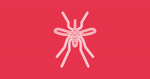
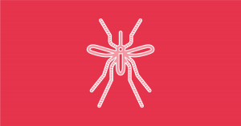
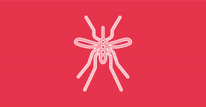
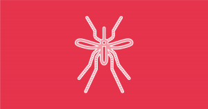

Enfermedades
 



COVID-19
Los síntomas aparecen entre dos y catorce días, con un promedio de cinco días, después de la exposición al virus.21222324 Existe evidencia limitada que sugiere que el virus podría transmitirse uno o dos días antes de que se tengan síntomas, ya que la viremia alcanza un pico al final del período de incubación.2526 El contagio se puede prevenir con el lavado de manos frecuente, o en su defecto la desinfección de las mismas con alcohol en gel, cubriendo la boca al toser o estornudar, ya sea con la sangradura (parte hundida del brazo opuesta al codo) o con un pañuelo y evitando el contacto cercano con otras personas,19 entre otras medidas profilácticas, como el uso de mascarillas. La OMS desaconsejaba en marzo la utilización de máscara quirúrgica por la población sana, 2728 en abril la OMS consideró que era una medida aceptable en algunos países. 29 No obstante, ciertos expertos recomiendan el uso de máscaras quirúrgicas basados en estudios sobre la Influenza H1N1, donde muestran que podrían ayudar a reducir la exposición al virus.30 Los CDC recomiendan el uso de mascarillas de tela, no médicas.31
DENGUE
Es una infección muy extendida que se presenta en todas las regiones de clima tropical del planeta. En los últimos años la transmisión ha aumentado de manera predominante en zonas urbanas y se ha convertido en un importante problema de salud pública. En la actualidad, más de la mitad de la población mundial está en riesgo de contraer la enfermedad. La prevención y el control del dengue dependen exclusivamente de las medidas eficaces de lucha contra el vector transmisor, el mosquito.2 El número de casos de dengue ha aumentado dramáticamente desde la década de 1960, con entre 50 y 528 millones de personas infectadas anualmente. Las primeras descripciones datan de 1779 y su causa viral y la transmisión fueron entendidas a principios del siglo XX. El dengue se ha convertido en un problema mundial desde la Segunda Guerra Mundial y es endémica en más de 110 países. Aparte de la eliminación de los mosquitos, se está trabajando en una vacuna contra el dengue, así como la medicación dirigida directamente al virus.
ZIKA
En 2014 el virus se propagó al este a través del océano Pacífico hacia la Polinesia Francesa, y después hacia la isla de Pascua para llegar en 2015 y 2016 a América Central, el Caribe y América del Sur, donde el brote epidémico del Zika ha alcanzado niveles pandémicos.45 La enfermedad produce síntomas similares a formas leves de dengue,6 su tratamiento consiste básicamente en el reposo,7 y en la actualidad no existen medicamentos o vacunas para su prevención.7 La fiebre del Zika está relacionada con otras enfermedades similares, como la fiebre amarilla y la fiebre del Nilo Occidental, las cuales también son producidas por otros Flavivirus transmitidos por mosquitos.6 Hay vínculo entre la fiebre del Zika y la microcefalia en recién nacidos de madres infectadas como sucedió en el año 2016 en Brasil.89